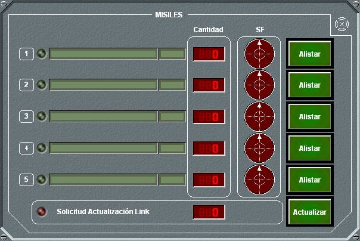
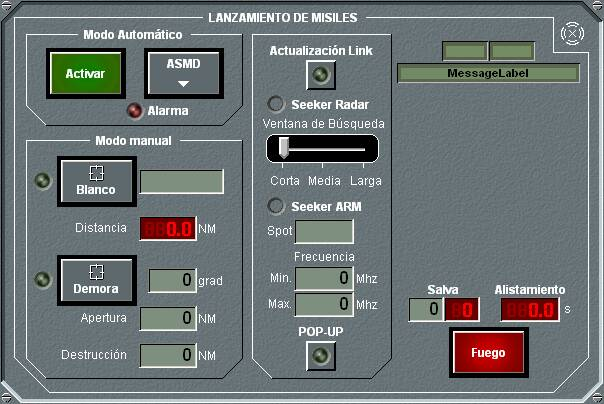
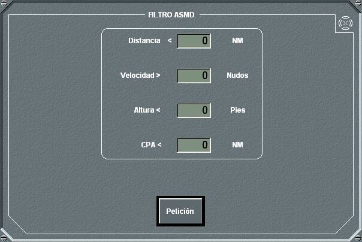
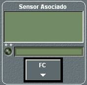
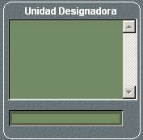
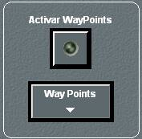
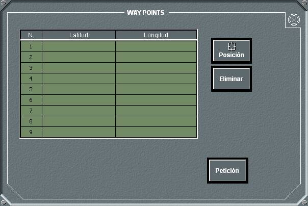

Misiles

El panel de detalle de Misiles muestra la lista de lanzadores de misiles instalados en la unidad, con indicación del estado del lanzador, su nombre y tipo, la cantidad de misiles en el pañol y el sector de fuego, representado gráficamente. También se presentan en este panel si se están recibiendo peticiones de Link Update de misiles en vuelo, si la unidad dispone de esta capacidad.
Al pulsar el botón Alistar para un lanzador determinado o Actualizar para misil por Link Update se abre el panel de alistamiento y lanzamiento de misiles:

En este panel de lanzamiento de misiles se muestra (derecha) el tipo de misil, tipo de navegación y nombre del misil. Mientras esté abierto este panel de lanzamiento de misiles, se presentará en la Pantalla Táctica gráficamente sector y alcance de fuego de este misil.
En este panel se pueden realizar las siguientes acciones:
Para asignar un misil a un blanco (para poder disparar un misil) la plataforma debe cumplir determinadas condiciones dependiendo del tipo de navegación del misil y del tipo de seeker que incorpora, tal y como se muestra en la siguiente tabla:
| Tipo Navegación |
Tipo Seeker |
Condición Plataforma |
||
| LOCK-ON PREVIO |
RADAR | Lock-On radar asociado | ||
| DESIGNACIÓN RADAR |
Detección radar asociado | |||
| PREPROGRAMADA | Detección por cualquier sensor que proporcione distancia O AP manual O Demora ESM O Demora manual lanzamiento |
|||
| CLOS | Lock-On o TWS radar asociado para blancos aéreos |
|||
| LOCK-ON PREVIO |
SEMIACTIVO | CWI de radar asociado | ||
| DESIGNACIÓN RADAR |
CWI de radar asociado | |||
| SEMIACTIVA | CWI de radar asociado | |||
| CLOS | CWI de radar asociado | |||
| LOCK-ON PREVIO |
ARM | Lock-On radar asociado O Detección ESM plataforma O Detección ESM seeker |
||
| DESIGNACIÓN RADAR |
Lock-On radar asociado O Detección ESM plataforma O Detección ESM seeker |
|||
| PREPROGRAMADA | Detección por cualquier sensor que proporcione distancia O Detección ESM plataforma O Detección ESM seeker O AP manual |
|||
| ARM | Detección ESM plataforma O Detección ESM seeker O AP manual |
|||
| LOCK-ON PREVIO |
IR | Lock-On radar asociado | ||
| DESIGNACIÓN RADAR |
Lock-On radar asociado | |||
| PREPROGRAMADA | Detección por cualquier sensor que proporcione distancia O Detección ESM plataforma O AP manual O Demora manual lanzamiento |
|||
| EO | Detección por visual | |||
| CLOS | Lock-On o TWS radar asociado para blancos aéreos |
|||
| LOCK-ON PREVIO |
EO | Lock-On radar asociado | ||
| DESIGNACIÓN RADAR |
O Detección radar asociado O Detección visual |
|||
| PREPROGRAMADA | Detección por cualquier sensor que proporcione distancia O Detección ESM plataforma O AP manual O Demora manual lanzamiento O Detección EO seeker misil |
|||
| EO | Detección EO seeker misil | |||
| CLOS | Lock-On o TWS radar asociado para blancos aéreos |
|||
| LOCK-ON PREVIO |
CLOS | Lock-On radar asociado | ||
| DESIGNACIÓN RADAR |
Lock-On o TWS radar asociado para blancos aéreos O Detección radar asociado |
|||
| CLOS | Lock-On o TWS radar asociado para blancos aéreos |
|||
| LOCK-ON PREVIO |
FILOGUIADO | Lock-On radar asociado | ||
| DESIGNACIÓN RADAR |
Detección radar asociado | |||
| FILOGUIADA | Detección visual plataforma | |||
| LOCK-ON PREVIO |
LÁSER | Lock-On radar asociado | ||
| DESIGNACIÓN RADAR |
Detección radar asociado | |||
| LÁSER | Detección visual plataforma | |||
| Nota: Los misiles con tipo de navegación CLOS, LOCK ON PREVIO, DESIGNACIÓN RADAR y SEMIACTIVA cuando asocian un sensor infrarrojo (*) a la dirección de torpedo, pueden disparar a cualquier blanco detectado por este sensor. (*) Esta capacidad no está disponible en todas las versiones del simulador. |
||||
El lanzamiento no se produce si se dan alguna de las siguientes circunstancias:
En todos estos casos se muestra un aviso al operador informado de la circunstancia que impide el lanzamiento.

Las condiciones que pueden establecerse en este panel son las siguientes:
Para que se produzca el disparo deben cumplirse las cuatro condiciones simultáneamente (con la excepción de que la condición de altura sólo será tenida en cuenta si se detecta altura del blanco).
Para no considerar los proyectiles lanzados por la propia unidad en los filtros ASMD, se comprueba si la amenaza se está acercando o alejando de la unidad. Para ello se examinará la dirección de avance de esa posible amenaza, es decir, una unidad sólo se tiene en cuenta como amenaza para el filtro ASMD si la demora del blanco menos su rumbo es inferior en valor absoluto a 90º.
Si el lanzador de misiles está en modo automático y se solicitan disparos en manual, se desactiva el modo automático y lanzador de misiles realiza los disparos en modo manual. Si el lanzador de misiles está disparando en modo manual, y se solicita activar el modo automático, se cancelan los disparos en manual y se activa el modo automático.
Dependiendo del tipo de misil, existen algunas funciones especiales para el disparo que aparecen en la parte derecha del panel de Fuego.
| PREPROGRAMADO: | Way Points |
| DESIGNATION RADAR: | Sensor Asociado |
| LOCKON PREVIO: | Sensor Asociado |
| SEMIACTIVO: | Sensor Asociado |
| ARM: | Ninguna |
| CLOS: | Sensor Asociado |
| FILOGUIADO: | Ninguna |
| LÁSER: | Designador |
| ELECTRO-ÓPTICO: | Ninguna |
A continuación se describen estas funciones:

En este panel se muestra la lista de los posibles sensores que pueden asociarse, el operador debe elegir uno de ellos, cuyo nombre aparece en el campo inferior, junto con su estado (Encendido / Apagado / Dañado) que se muestra en el led mayor. Los dos leds miniatura indican Lock-On e Iluminación en el caso de que el sensor sea de tipo radar. Por último, pulsando en el botón FC se accede al panel de configuración del sensor seleccionado (Para una descripción detallada ver los capítulos correspondientes a Radar e Infrarrojo (*)).
(*) Infrarrojo no disponible en todas las versiones del Simulador.

En el panel correspondiente se muestra la lista de posibles unidades designadoras, de las cuales debe elegirse una, cuyo nombre aparece en la parte inferior del panel.

En el panel correspondiente sólo aparece un botón Way Points, y al pulsarlo se accede al panel de introducción de Way Points.

Para introducir un Way Point debe situarse el Hook sobre la posición deseada y pulsar el botón Hook. Cada Way Point puede ser eliminado eligiéndolo de la lista y pulsando el botón Eliminar. Por último, al pulsar el botón Petición, quedan registrados los Way Points para el misil. En la pantalla táctica aparece un símbolo en cada way point con su número correspondiente.